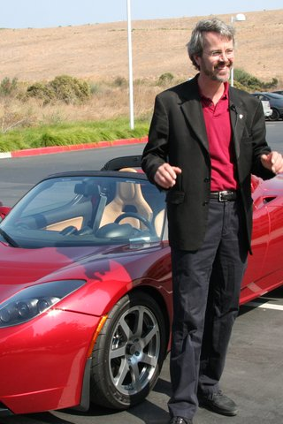
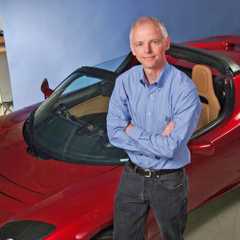
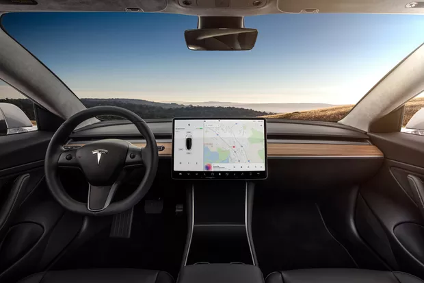

Nós estamos construindo um mundo movido por energia solar, correndo nas baterias e transportado por veículos elétricos. Explore os mais recentes impactos de nossos produtos, pessoas e cadeia de suprimentos.
O futuro é sustentável

Nossa história
Fundada em 2003 na Califórnia, a Tesla é uma empresa especializada em Carros Elétricos. O nome é uma homenagem a Nikola Tesla (1856-1943), sérvio que foi um dos mais geniais cientistas da história, com contribuições essenciais para o conhecimento que usamos até hoje para o fornecimento de energia e correntes elétricas. Foi Nikola Tesla que criou, no século XIX, um motor de indução de corrente alternada que revolucionou a indústria. Nada mais justo do que a homenagem no nome de uma empresa que visa lançar carros tecnológicos e ecologicamente sustentáveis. Mas, diferentemente do que acredita-se, a Tesla não foi criada pelo sul-africano Elon Musk. Os fundadores foram os engenheiros Martin Eberhard e Marc Tarpenning, em 2003. Só no ano seguinte, com investimentos milionários, é que o famoso e polêmico CEO Elon Musk assumiu o cargo.
Martin Eberhard
Marc Tarpenning


Não fabricamos somente carros

Apesar da atuação da companhia ser direcionada para fabricação e distribuição de veículos elétricos, com a Tesla Motors, ela também atua em projetos de sustentabilidade. A empresa tem iniciativas na geração e armazenamento de energia solar, bem como na comercialização de componentes elétricos como baterias industriais de lítio-íon.
Conectados 24h por dia
Uma curiosidade dos carros de Elon Musk é que eles nunca desligam – mais ou menos como o próprio CEO. Ao parar o carro é só colocar a alavanca de câmbio na posição “Park”. Nem é preciso se preocupar em desligar chave alguma. No máximo, o que pode ser feito é ligar e desligar o compartimento que dá acesso ao sistema de alimentação do veículo, via um botão na tela sensível ao toque. Isso porque o veículo tem a necessidade de ser constantemente atualizado, e esse serviço normalmente pode acontecer durante a noite.
